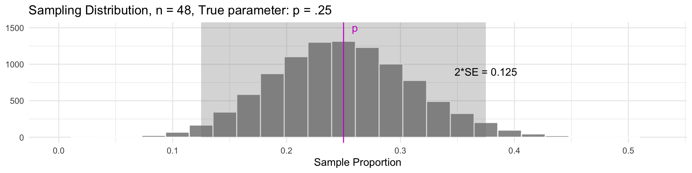

Confidence Intervals I
Megan Ayers
Stat 141 | Fall 2026
Friday, Week 7
Today’s Goals
Introduce confidence intervals as a method for estimating a parameter
Use bootstrapping as a means of creating confidence intervals
Confidence Intervals
Point Estimates
- To estimate a population parameter, we can use a sample statistic.
- Ex: You’re hosting a pizza party for 200 people, and need to know what proportion \(p\) of vegetarian pizza to order.
- Idea: Ask a (random) sample of attendees about their pizza preference and use the proportion \(\widehat{p}\) in the sample as an estimate for the total proportion \(p\).
- Your sample statistic, \(\widehat{p}\), is a good guess for the population parameter.
- Terminology: We sometimes call our sample statistic a point estimate.
Point Estimates vs. Interval Estimates
- A sample statistic is a good guess for the population parameter, but not the whole story
- Q: After polling pizza party attendees, you find \(\widehat{p} = 0.33\). What factor(s) determine your (un)certainty in this estimate?
- It may be preferable to estimate the proportion using a range of values, with smaller intervals corresponding to precision.
With just \(n = 9\) people, you might give a range of \(0.03\) to \(0.63\) for \(p\).
But with \(n = 48\), you might instead give the range \(0.20\) to \(0.46\).
- We call these ranges interval estimates.
Confidence Interval Estimates
A confidence interval estimate for a parameter usually takes the form \[ \textrm{Statistic }\pm \textrm{ Margin of Error (ME)} \]
The confidence interval gives a range of plausible values for the parameter.
- e.g., when sampling pizza preferences with \(n=48\), we estimate \(p\) using the interval
\[ 0.20 \textrm{ to } 0.46 \qquad \textrm{ or } \qquad \underbrace{0.33}_{\text{Statistic ($\widehat{p}$)}} \pm \ \ \ \underbrace{0.13}_{\text{ME}} \]
The Margin of Error determines the width of the interval (\(2*\text{Margin of Error}\))
- e.g., in our pizza interval, the width is: \[ 0.46 - 0.20 = 0.26 = 2 * \underbrace{0.13}_{\text{ME}} \]
Q: How should we choose our Margin of Error? (think conceptually)
Confidence Intervals using the Sampling Distribution
Goal: Figure out a reasonable Margin of Error
In our example, suppose \(p = 0.25\) (i.e., 25% of all party attendees prefer vegetarian)
For approximately bell-shaped sampling distributions, 95% of all sample statistics are within 2 SE of the parameter.
- This also means that for 95% of all samples, the parameter will be within a distance of 2 SE of the sample statistic (every sample in the gray region)
Confidence Intervals
Idea: Build an interval centered at the sample statistic, with a margin of error of \(2\cdot SE\):
\[ \widehat{p} \pm 2\cdot \textrm{SE} \]
- Intervals constructed this way will contain the parameter \(p\) in 95% of samples!
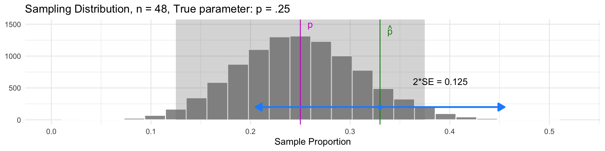
- The interval for our sample was \(0.33 \pm 0.125\), which does contain the parameter \(p\)
Confidence Intervals
Idea: Build an interval centered at the sample statistic, with a margin of error of \(2\cdot SE\):
\[ \widehat{p} \pm 2\cdot \textrm{SE} \]
- Intervals constructed this way will contain the parameter \(p\) in 95% of samples!
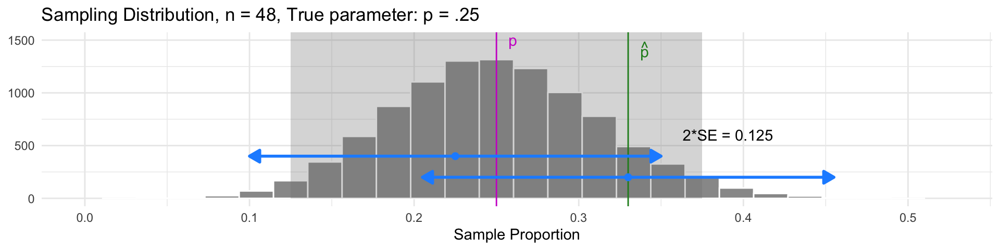
- Samples with \(\widehat{p}\) in the gray region have intervals that also contain the parameter \(p\)
Confidence Intervals
Idea: Build an interval centered at the sample statistic, with a margin of error of \(2\cdot SE\):
\[ \widehat{p} \pm 2\cdot \textrm{SE} \]
- Intervals constructed this way will contain the parameter \(p\) in 95% of samples!
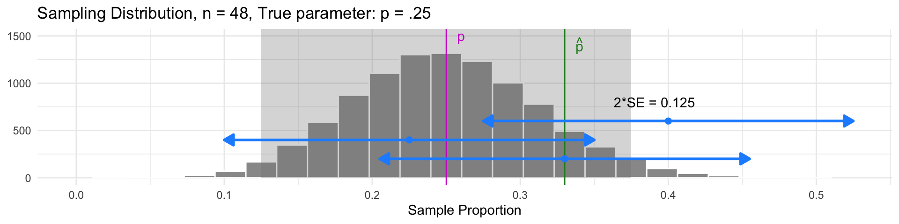
- Samples with \(\widehat{p}\) outside the gray region have intervals that don’t contain \(p\)
Confidence Intervals
Idea: Build an interval centered at the sample statistic, with a margin of error of \(2\cdot SE\):
\[ \widehat{p} \pm 2\cdot \textrm{SE} \]
- Intervals constructed this way will contain the parameter \(p\) in 95% of samples!
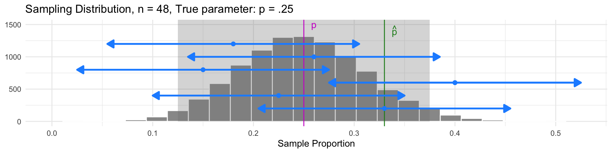
- But 95% of all samples will have intervals that do contain \(p\)
Another way to visualize this
Imagine we…
- draw a sample from our population with \(p = 40\)
- calculate the sample statistic in that sample
- construct a confidence interval for that sample using \(\widehat{p} \pm 2\cdot \textrm{SE}\)

Another way to visualize this
Imagine we…
- draw 5 different samples from our population with \(p = 40\)
- calculate the sample statistic in each sample
- construct a confidence interval for each sample using \(\widehat{p} \pm 2\cdot \textrm{SE}\)
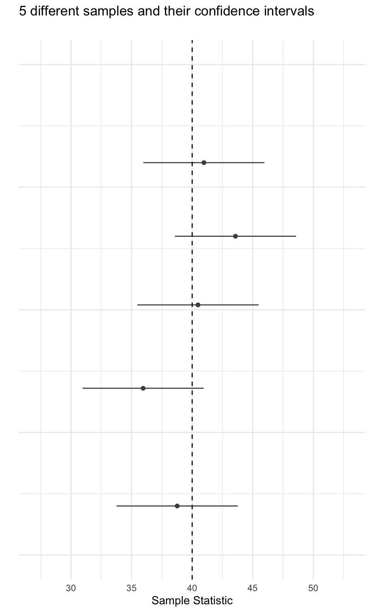
Another way to visualize this
Imagine we…
- draw 20 different samples from our population with \(p = 40\)
- calculate the sample statistic in each sample
- construct a confidence interval for each sample using \(\widehat{p} \pm 2\cdot \textrm{SE}\)
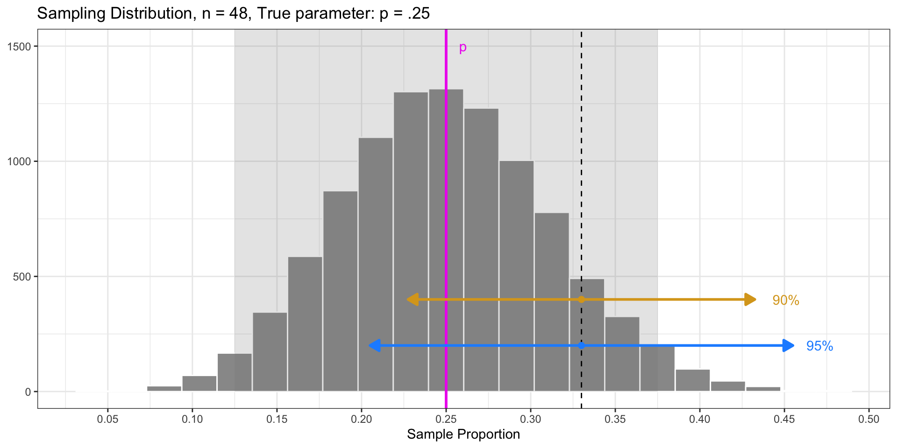
Another way to visualize this
Imagine we…
- draw 100 different samples from our population with \(p = 40\)
- calculate the sample statistic in each sample
- construct a confidence interval for each sample using \(\widehat{p} \pm 2\cdot \textrm{SE}\)
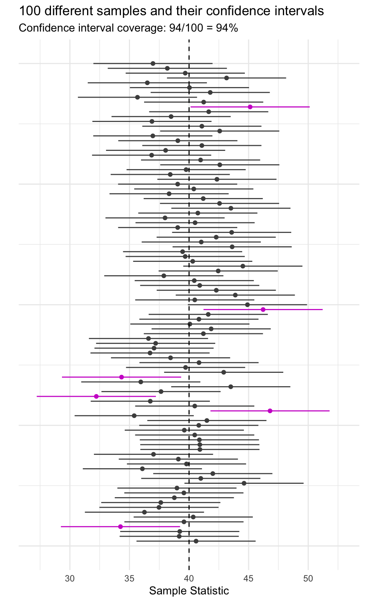
Confidence levels
On the previous slide, 95% of confidence intervals across all samples would contain the true parameter, \(p\).
Thus, we call each interval estimate a 95% confidence interval.
Here, 95% is our confidence level: The success rate for our estimation technique.
- e.g., The pizza interval \(0.33 \pm 0.13\) has confidence level of 95%
The confidence level corresponds to the percentage of samples that would yield a corresponding confidence interval containing the true value of the parameter.
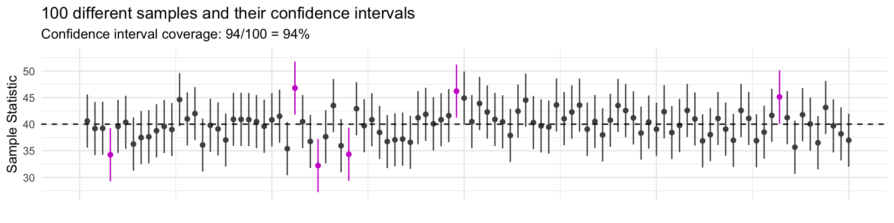
Confidence levels
Confidence Level: the percentage of samples that would yield a corresponding confidence interval containing the true value of the parameter.
For example, were we to:
- Repeatedly draw samples from the population, and
- Create 95% confidence intervals in each sample…
- 95% of those confidence intervals would contain the true parameter
Recap: Confidence Intervals
Confidence intervals consist of 1. an interval estimate and 2. a confidence level.
In our pizza party sample, we estimated the true proportion of vegetarian pizza-eaters was between \(0.20\) and \(0.46\), with \(95\%\) confidence.
What does “95% confidence” mean?
- It’s the success rate of the process
- For 95% of all samples, the interval we construct will actually contain the parameter.
Worth emphasizing: it’s the success rate of The Process, NOT the specific interval you calculated in your sample.
- The parameter is either in your interval, or it’s not – there’s no success rate there!
Think-Pair-Share
Q: What’s the difference between these two interpretations of a 95% confidence interval?
For 95% of all samples, the interval we construct will actually contain the parameter.
For a given interval, there is a 95% chance that the parameter will fall in the interval.
Think-Pair-Share (Answer)
Q: What’s the difference between these two interpretations of a 95% confidence interval?
For 95% of all samples, the interval we construct will actually contain the parameter.
For a given interval, there is a 95% chance that the parameter will fall in the interval.
A:
The first one is accurate! 95% confidence refers to the accuracy of the process
The second one is wrong, an easy mistake to make!! It confuses probability of the process with a deterministic outcome. Our sample statistic “moves” with sampling variability - the parameter does not.
Interval Width and Sample Size (\(n\))
Idea: Build a 95% confidence interval centered at the sample statistic, with a margin of error of \(2\cdot SE\): \[ \widehat{p} \pm \underbrace{2\cdot \textrm{SE}}_{\text{Margin of Error}} \]
This interval’s width is determined by the Standard Error (SE).
Reminder: The SE is the standard deviation of the sampling distribution.
Q: What do we know about the SE as the sample size (\(n\)) increases?
Q: What does this imply about the interval’s width as the sample size (\(n\)) increases?
- The SE gets smaller as \(n\) increases!
- Our interval becomes narrower as \(n\) increases!
Interval Width and Confidence Level
Idea: Build an 95% confidence interval centered at the sample statistic, with a margin of error of \(2\cdot SE\): \[ \widehat{p} \pm \underbrace{2\cdot \textrm{SE}}_{\text{Margin of Error}} \]
Chose \(\text{Margin of Error} = 2*SE\) because 95% of sample statistics fall within \(2*SE\) of the parameter (in sampling distribution).
Fun Fact: 90% of sample statistics fall within \(1.64*SE\) of the parameter.
- Q: What would happen if we did the following interval? \[ \widehat{p} \pm 1.64*\textrm{SE} \]
- We would get a 90% confidence interval!
- This interval is narrower, but has a lower “success” rate! For 90% of all samples, the interval will contain the parameter.
Interval Width and Confidence Level
Takeaway: The confidence level also determines the width of the interval!
higher confidence (e.g., 95%) means a larger margin of error (wider interval)
lower confidence (e.g., 90%) means a smaller margin of error (narrower interval)

Problems(?) with Confidence Intervals
Let’s say we’re working with 95% confidence intervals
- Problem 1: We only have 1 sample, and we don’t know if it belongs to the 95% of “good” samples, or the 5% of “bad” ones
- Consolation: If I go through life constructing 95% confidence intervals, I will be right about 95% of the time
- That’s not bad!
- Problem 2: To make a confidence interval, we need the sampling distribution in order to compute the standard error. But in practice, we (often) don’t have direct access to this.
- Solution: approximate the sampling distribution via bootstrapping!
Bootstrap Confidence Intervals: Example in R
Sleep for Reed Students
Suppose we wish to estimate how many hours Reed students sleep, on average with a sample of 50 students, who we surveys on hours of sleep.
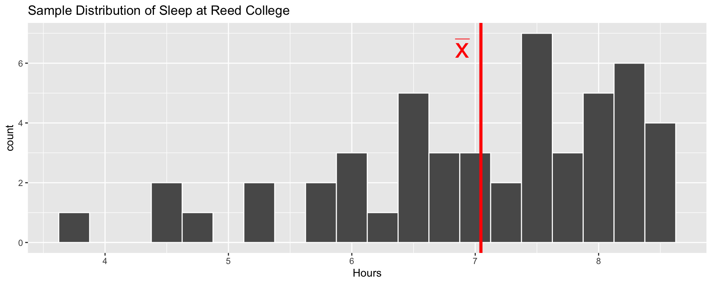
- Is the true average hours of sleep at Reed is 7.046?
- Surely not! This is just one sample of size 50
- Let’s create a confidence interval for the true average hours
- We can use the bootstrap distribution to estimate the SE needed for the interval
Bootstrap Average Sleep
Create the bootstrap samples:
Q: What is each argument of
rep_sample_n()doing?Each bootstrap sample consists of 50 observations sampled with replacement from the original sample (
size = 50)We have a total of 10,000 bootstrap samples (
reps = 10000)
# A tibble: 500,000 × 3
# Groups: replicate [10,000]
replicate Student Hours
<int> <int> <dbl>
1 1 28 4.40
2 1 12 6.45
3 1 7 7.71
4 1 4 7.12
5 1 9 7.12
6 1 1 7.48
7 1 27 7.26
8 1 39 6.38
9 1 37 3.74
10 1 44 7.98
# ℹ 499,990 more rowsBootstrap Average Sleep
Compute bootstrap statistics: (Mean of each bootstrap sample)
- We now have 10,000 sample means based on the bootstrap samples, and can assess their variability
Bootstrap Average Sleep
Graph the bootstrap distribution:
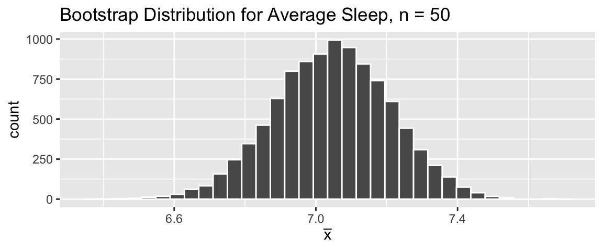
- Use the bootstrap distribution to estimate the standard error:
Confidence Interval for Average Sleep
Our sample average sleep was \(\bar x = 7.046\).
Based on the bootstrap distribution, this statistic has Standard Error=0.165.
Our 95% confidence interval for the true average hours of sleep for Reed students is: \[ {7.046} \pm 2 \cdot \color{blue}{0.165} \]
- Our best guess for average nightly sleep is that it’s between 6.716 and 7.376. This method has a success rate of \(95\%\).
Bootstrap Confidence Intervals: Complete Code Example
We are given the data frame sleep. Our statistic of interest is the average hours of sleep per night in the sample contained in this data frame (recorded individually as Hours). We can use the bootstrap method to calculate confidence intervals for the parameter, the average hours of sleep per night in the population:
set.seed(121)
sleep <- read.csv("data-path.csv") # Read in the data
bootstrap_samples <- sleep %>% # Creating our 10,000 bootstrap samples
rep_sample_n(size = 50, replace = TRUE, reps = 10000)
bootstrap_stats <- bootstrap_samples %>% # Calculating bootstrap statistics
group_by(replicate) %>% # from each sample.
summarize(x_bar = mean(Hours))
ggplot(bootstrap_stats, aes(x = x_bar))+ # Graph the bootstrap distribution
geom_histogram(bins = 34, color = "white")+
labs(title = "Bootstrap Distribution for Average Sleep, n = 50", x = expression(bar(x)))
se_hat <- sd(bootstrap_stats$x_bar) # Estimate the standard error
xbar <- mean(sleep$Hours) # This is our **statistic**, 7.046
c(xbar - 2 * se_hat, xbar + 2 * se_hat) # Calculate confidence intervalNext time:
More on changing confidence levels
What to do with distributions that aren’t bell-shaped (percentile method)
Confidence interval misconceptions